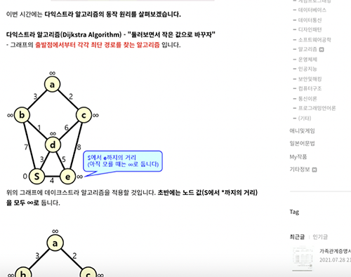

사진

|
블로그에 게시글을 올린 모습 |
|  |
알고리즘의 원리를 블로그에 올린 모습 |
배경과 목적
지식을 정리하고 글을 잘 쓰기 위해서 입니다.
지식을 정리하고 글을 잘 쓰기 위해서 입니다.
강화된 역량
- 구현력, 문제 해결 능력, 정리력 : 블로그에 글을 쓰고 올리는 과정을 통해서 강화되었습니다.
- 탐구력 : 어떻게 표현할지 고민하고, 모르는 내용은 인용하는 과정을 통해서 강화되었습니다.
부연 설명